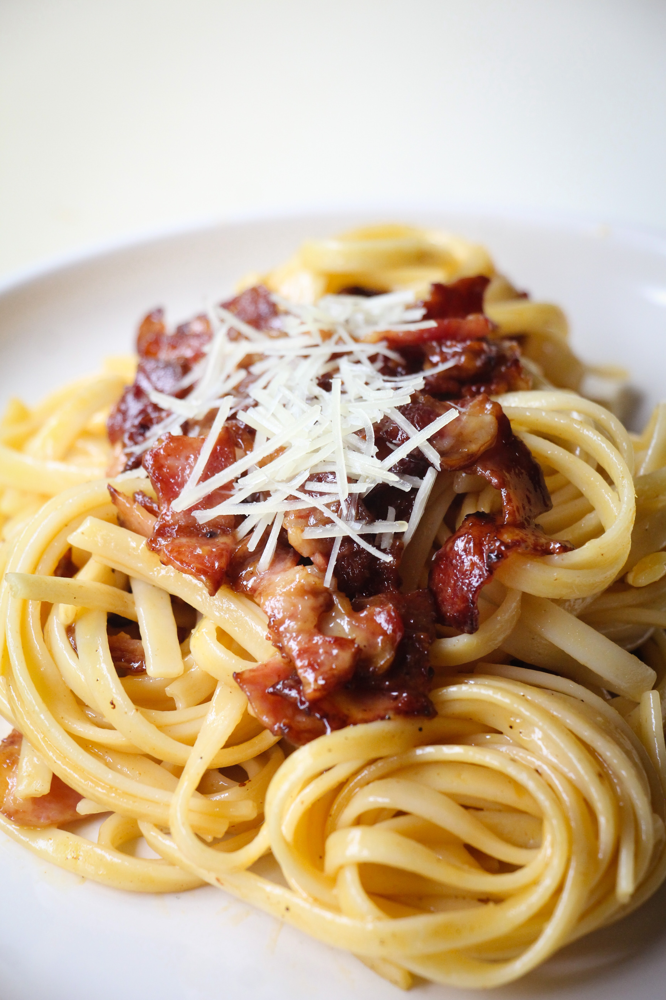

Carbonara

Description
A dish of hot pasta into which other ingredients (such as eggs, bacon or ham, and grated cheese) have been mixed —often used as a postpositive modifier
Most of time used as
Ingriedients
- 320 grams of rigatoni or spaghetti
- 140 grams of ‘guanciale’ (cured pork jowl)
- 4 egg yolks (large)
- Salt and pepper
Steps
- Heat watter with salt
- Cut 'guanciale'
- Add spaghetti to boiled watter
- Fry 'guanciale'
- Add eggs with spices